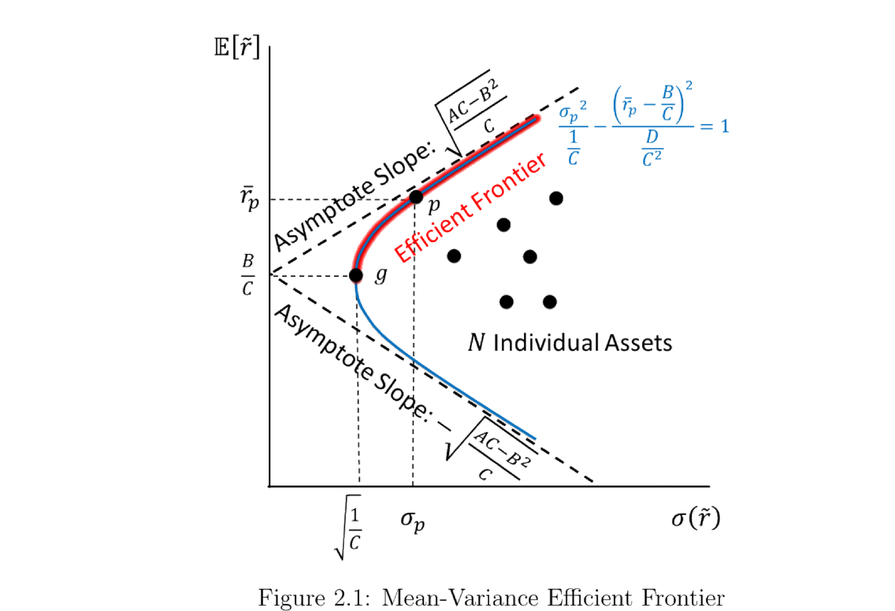
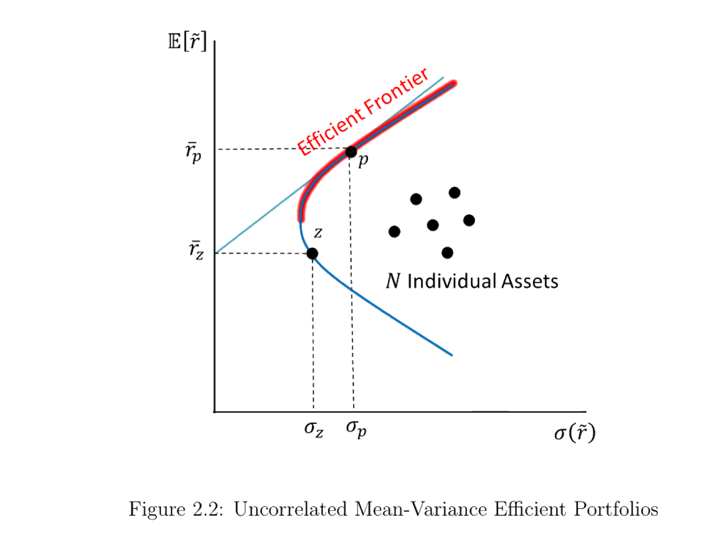
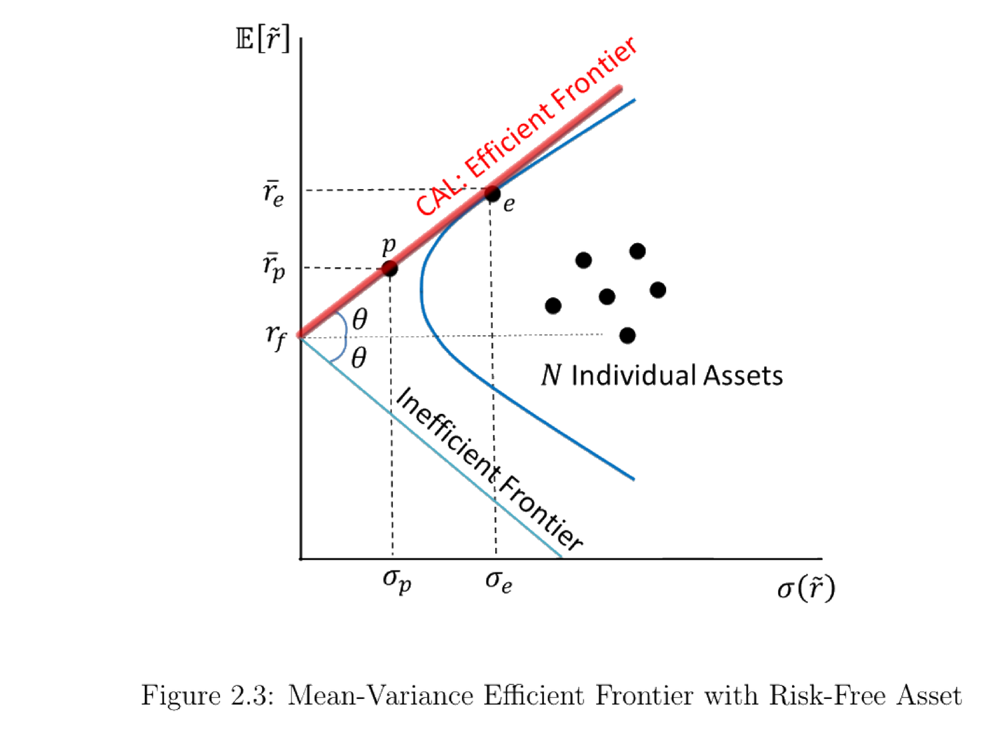

2. Static Portfolio Theory
静态组合理论 (static portfolio theory) 把资产看作每期均值方差都相同的对象，于是最优配置可一次性求解。本章从 Markowitz (1952) 的均值-方差分析出发，推出均值-方差前沿 (mean-variance frontier)、两基金定理 (two-fund theorem) 与切点/市场组合 (tangency / market portfolio)，并在均衡中导出 Sharpe (1964) 的资本资产定价模型 (CAPM)。
Static portfolio theory treats assets as having the same mean and variance every period, so the optimal allocation is solved once and for all. Starting from Markowitz's (1952) mean-variance analysis, this chapter derives the mean-variance frontier, the two-fund theorem, and the tangency / market portfolio, and in equilibrium obtains Sharpe's (1964) Capital Asset Pricing Model (CAPM).
2.1 Mean-Variance Analysis: Markowitz (1952)
2.1.1 Setup
市场上有 \(N\) 种风险证券、暂无无风险资产。净收益为 \(N\times1\) 向量 \(\tilde{\mathbf r}=(\tilde r_1,\dots,\tilde r_N)'\)，期望 \(\bar{\mathbf r}=\mathbb{E}[\tilde{\mathbf r}]\)，方差-协方差矩阵 \(\boldsymbol\Omega\)（\(N\times N\)）。投资者在给定期望收益下偏好更低方差，效用 \(U(\bar r,\sigma)\) 满足 \(\partial U/\partial\bar r>0\)、\(\partial U/\partial\sigma<0\)（如 Sharpe 1964 的 \(U=k_1\bar r-k_2\sigma^2\)，\(k_1,k_2>0\)）。组合权重为 \(\boldsymbol\omega=(\omega_1,\dots,\omega_N)'\)，并记全 1 向量 \(\mathbf 1=(1,\dots,1)'\)。
There are \(N\) risky securities and (for now) no risk-free asset. Net returns form an \(N\times1\) vector \(\tilde{\mathbf r}=(\tilde r_1,\dots,\tilde r_N)'\) with mean \(\bar{\mathbf r}=\mathbb{E}[\tilde{\mathbf r}]\) and variance–covariance matrix \(\boldsymbol\Omega\) (\(N\times N\)). Investors prefer lower variance for a given expected return: utility \(U(\bar r,\sigma)\) with \(\partial U/\partial\bar r>0\), \(\partial U/\partial\sigma<0\) (e.g. Sharpe's \(U=k_1\bar r-k_2\sigma^2\), \(k_1,k_2>0\)). Portfolio weights are \(\boldsymbol\omega=(\omega_1,\dots,\omega_N)'\), and \(\mathbf 1=(1,\dots,1)'\) is the vector of ones.
2.1.2 Mean-Variance Frontier
分析依赖 \(\boldsymbol\Omega\) 可逆。两种情形会破坏可逆性：冗余资产（存在 \(\mathbf c\) 使 \(\mathbf c'\tilde{\mathbf r}=0\)，某收益被线性复制——剔除即可）与无风险资产（与所有资产协方差为零）。故先只考虑风险资产，稍后再加入无风险资产。给定目标期望 \(\bar r_p\)，前沿组合的方差最小化问题为
The analysis needs \(\boldsymbol\Omega\) invertible. Two things break invertibility: redundancy (some \(\mathbf c\) with \(\mathbf c'\tilde{\mathbf r}=0\), a return replicated by others — just drop it) and a risk-free asset (zero covariance with everything). So we start with risky assets only and add the risk-free asset later. For a target mean \(\bar r_p\), the frontier portfolio solves
$$\min_{\boldsymbol\omega}\;\tfrac12\,\boldsymbol\omega'\boldsymbol\Omega\,\boldsymbol\omega \quad\text{s.t.}\quad \bar{\mathbf r}'\boldsymbol\omega=\bar r_p,\quad \mathbf 1'\boldsymbol\omega=1.$$
证明 / Proof：均值-方差前沿是一条双曲线
构造拉格朗日函数并对 \(\boldsymbol\omega\) 求一阶条件：
Form the Lagrangian and take the FOC with respect to \(\boldsymbol\omega\):
$$\mathcal L=\tfrac12\boldsymbol\omega'\boldsymbol\Omega\boldsymbol\omega+\lambda_1(\bar r_p-\bar{\mathbf r}'\boldsymbol\omega)+\lambda_2(1-\mathbf 1'\boldsymbol\omega) \;\Longrightarrow\; \boldsymbol\omega=\lambda_1\boldsymbol\Omega^{-1}\bar{\mathbf r}+\lambda_2\boldsymbol\Omega^{-1}\mathbf 1.$$
记标量 \(A=\bar{\mathbf r}'\boldsymbol\Omega^{-1}\bar{\mathbf r}\)、\(B=\bar{\mathbf r}'\boldsymbol\Omega^{-1}\mathbf 1\)、\(C=\mathbf 1'\boldsymbol\Omega^{-1}\mathbf 1\)、\(D=AC-B^2\)。代入两个约束解出 \(\lambda_1=(\bar r_pC-B)/D\)、\(\lambda_2=(A-B\bar r_p)/D\)，于是
Let \(A=\bar{\mathbf r}'\boldsymbol\Omega^{-1}\bar{\mathbf r}\), \(B=\bar{\mathbf r}'\boldsymbol\Omega^{-1}\mathbf 1\), \(C=\mathbf 1'\boldsymbol\Omega^{-1}\mathbf 1\), \(D=AC-B^2\). The two constraints give \(\lambda_1=(\bar r_pC-B)/D\), \(\lambda_2=(A-B\bar r_p)/D\), so
$$\sigma_p^2=\boldsymbol\omega'\boldsymbol\Omega\boldsymbol\omega=\lambda_1\bar r_p+\lambda_2=\frac{C\bar r_p^2-2B\bar r_p+A}{D}.$$
整理成标准形式即为一条双曲线（顶点在全局最小方差组合）：
Rearranged into standard form, this is a hyperbola (its vertex is the global minimum-variance portfolio):
$$\frac{\sigma_p^2}{1/C}-\frac{(\bar r_p-B/C)^2}{D/C^2}=1. \quad\blacksquare$$
几何。 在 \((\sigma,\bar r)\) 平面上，前沿是开口向右的双曲线；顶点（最小方差）在 \(\big(\sqrt{1/C},\,B/C\big)\)，渐近线斜率 \(\pm\sqrt{D/C}=\pm\sqrt{(AC-B^2)/C}\)。上半支称为有效前沿 (efficient frontier)。Geometry. In the \((\sigma,\bar r)\) plane the frontier is a hyperbola opening rightward; its vertex (minimum variance) is at \(\big(\sqrt{1/C},\,B/C\big)\), with asymptote slope \(\pm\sqrt{D/C}=\pm\sqrt{(AC-B^2)/C}\). The upper branch is the efficient frontier.

图 2.1：均值-方差前沿。红色为有效前沿（上半支），\(g\) 为全局最小方差组合，虚线为渐近线，散点为 \(N\) 个单个资产。
Figure 2.1: the mean-variance frontier. Red = efficient frontier (upper branch), \(g\) = global minimum-variance portfolio, dashed = asymptotes, dots = the \(N\) individual assets.
练习 2.1（零贝塔组合 zero-beta portfolio）。 对前沿上任一非最小方差组合 \(p\)，可找到与之不相关的前沿组合 \(z\)：在均值-标准差图上过 \(p\) 作前沿的切线，切线与纵轴的交点即 \(z\) 的期望收益（称为 \(p\) 的零贝塔利率）。
Exercise 2.1 (zero-beta portfolio). For any frontier portfolio \(p\) other than the GMV, there is a frontier portfolio \(z\) uncorrelated with \(p\): draw the tangency line to the frontier at \(p\); where it meets the vertical axis is the expected return of \(z\) (the zero-beta rate for \(p\)).
解答 / Solution：零贝塔利率与组合 z
由 (2.7) 对 \(\bar r_p\) 求导，切线斜率为 \(k_p=d\bar r_p/d\sigma_p=\sigma_p/\lambda_1\)；切线与纵轴的交点即零贝塔利率：
Differentiating (2.7), the tangency slope is \(k_p=d\bar r_p/d\sigma_p=\sigma_p/\lambda_1\); its intercept on the vertical axis is the zero-beta rate:
$$\frac{d\sigma_p}{d\bar r_p}=\frac{1}{2\sigma_p}\frac{2C\bar r_p-2B}{D}=\frac{\lambda_1}{\sigma_p} \;\Longrightarrow\; \bar r_z=\bar r_p-k_p\sigma_p=\bar r_p-\frac{\sigma_p^2}{\lambda_1}.$$
令 \(z\) 为目标收益 \(\bar r_z\) 的前沿组合（权重由 (2.4) 以 \(\bar r_z\) 代入给出），可验证 \(\operatorname{Cov}(\tilde{\mathbf r}'\boldsymbol\omega_z,\tilde{\mathbf r}'\boldsymbol\omega)=0\)，即 \(z\) 与 \(p\) 不相关。\(\blacksquare\)
Let \(z\) be the frontier portfolio with mean \(\bar r_z\) (weights from (2.4) with \(\bar r_z\)). One verifies \(\operatorname{Cov}(\tilde{\mathbf r}'\boldsymbol\omega_z,\tilde{\mathbf r}'\boldsymbol\omega)=0\), so \(z\) is uncorrelated with \(p\). \(\blacksquare\)

图 2.2：不相关的均值-方差有效组合。过 \(p\) 作前沿切线，与纵轴交于 \(\bar r_z\)，对应的前沿组合 \(z\) 即 \(p\) 的零贝塔组合（\(\operatorname{Cov}=0\)）。
Figure 2.2: Uncorrelated mean-variance efficient portfolios. The tangency line to the frontier at \(p\) meets the vertical axis at \(\bar r_z\); the corresponding frontier portfolio \(z\) is the zero-beta portfolio of \(p\) (\(\operatorname{Cov}=0\)).
2.1.3 Global Minimum-Variance Portfolio
全局最小方差组合 \(g\) 是所有组合中方差最小者——把 2.1.2 的问题去掉目标收益约束 \(\bar{\mathbf r}'\boldsymbol\omega=\bar r_p\) 即可。
The global minimum-variance (GMV) portfolio \(g\) has the smallest variance of all — just drop the target-return constraint \(\bar{\mathbf r}'\boldsymbol\omega=\bar r_p\) from §2.1.2.
证明 / Proof：全局最小方差组合
\(\min_{\boldsymbol\omega_g}\tfrac12\boldsymbol\omega_g'\boldsymbol\Omega\boldsymbol\omega_g\) s.t. \(\mathbf 1'\boldsymbol\omega_g=1\)。拉格朗日一阶条件给出 \(\boldsymbol\omega_g=\lambda_2\boldsymbol\Omega^{-1}\mathbf 1\)，由约束 \(1=\lambda_2 C\) 得 \(\lambda_2=1/C\)，于是
\(\min_{\boldsymbol\omega_g}\tfrac12\boldsymbol\omega_g'\boldsymbol\Omega\boldsymbol\omega_g\) s.t. \(\mathbf 1'\boldsymbol\omega_g=1\). The FOC gives \(\boldsymbol\omega_g=\lambda_2\boldsymbol\Omega^{-1}\mathbf 1\); the constraint \(1=\lambda_2 C\) gives \(\lambda_2=1/C\), so
$$\boldsymbol\omega_g=\frac{\boldsymbol\Omega^{-1}\mathbf 1}{\mathbf 1'\boldsymbol\Omega^{-1}\mathbf 1}, \qquad \sigma_g^2=\frac1C, \qquad \bar r_g=\frac BC. \quad\blacksquare$$
Remark 2.1（直觉）。 GMV 用上所有资产、使任何单一资产都没有特殊作用，因此是「最分散」的组合：它同时考虑各资产的方差与相关性，让每个资产对组合方差的边际贡献相等。Remark 2.1 (intuition). The GMV uses all assets so that no single asset has a special effect — it is the "most diversified" portfolio: it accounts for each asset's variance and correlations, equalizing every asset's marginal contribution to portfolio variance.
练习 2.2（任意组合与 GMV 的协方差恒定）。 任意组合 \(a\) 与全局最小方差组合 \(g\) 的协方差，都等于 \(g\) 的方差 \(1/C\)。
Exercise 2.2 (every portfolio has the same covariance with the GMV). Any portfolio \(a\) has covariance \(1/C\) with the GMV portfolio \(g\) — equal to the GMV's own variance.
解答 / Solution
用 \(\boldsymbol\omega_g=\boldsymbol\Omega^{-1}\mathbf 1/(\mathbf 1'\boldsymbol\Omega^{-1}\mathbf 1)\) 与 \(\boldsymbol\omega_a'\mathbf 1=1\)：
Using \(\boldsymbol\omega_g=\boldsymbol\Omega^{-1}\mathbf 1/(\mathbf 1'\boldsymbol\Omega^{-1}\mathbf 1)\) and \(\boldsymbol\omega_a'\mathbf 1=1\):
$$\operatorname{Cov}(\tilde{\mathbf r}'\boldsymbol\omega_a,\tilde{\mathbf r}'\boldsymbol\omega_g)=\boldsymbol\omega_a'\boldsymbol\Omega\boldsymbol\omega_g=\boldsymbol\omega_a'\boldsymbol\Omega\frac{\boldsymbol\Omega^{-1}\mathbf 1}{\mathbf 1'\boldsymbol\Omega^{-1}\mathbf 1}=\frac{\boldsymbol\omega_a'\mathbf 1}{\mathbf 1'\boldsymbol\Omega^{-1}\mathbf 1}=\frac{1}{C}=\sigma_g^2. \quad\blacksquare$$
2.1.4 Two-Fund Theorem: Tobin (1958)
Tobin (1958) 指出：\(N\) 个风险资产的任意前沿组合，都可由前沿上的两个组合混合得到。因为任一前沿组合的权重 \(\boldsymbol\omega=\lambda_1\boldsymbol\Omega^{-1}\bar{\mathbf r}+\lambda_2\boldsymbol\Omega^{-1}\mathbf 1\) 可重写为
Tobin (1958): any frontier portfolio of the \(N\) risky assets is a mix of two frontier portfolios. Since any frontier weight \(\boldsymbol\omega=\lambda_1\boldsymbol\Omega^{-1}\bar{\mathbf r}+\lambda_2\boldsymbol\Omega^{-1}\mathbf 1\) can be rewritten as
$$\boldsymbol\omega=\big(\lambda_1 B\big)\underbrace{\frac{\boldsymbol\Omega^{-1}\bar{\mathbf r}}{\mathbf 1'\boldsymbol\Omega^{-1}\bar{\mathbf r}}}_{\boldsymbol\omega_a}+\big(\lambda_2 C\big)\underbrace{\frac{\boldsymbol\Omega^{-1}\mathbf 1}{\mathbf 1'\boldsymbol\Omega^{-1}\mathbf 1}}_{\boldsymbol\omega_g},$$
证明 / Proof：两基金系数和为 1，基金 a 的收益为 A/B
代入 \(\lambda_1,\lambda_2\) 的解 (2.6)，两个混合系数之和为
Substituting the solved \(\lambda_1,\lambda_2\) from (2.6), the two mixing coefficients sum to
$$\lambda_1 B+\lambda_2 C=\frac{\bar r_pC-B}{D}B+\frac{A-B\bar r_p}{D}C=\frac{AC-B^2}{D}=\frac{D}{D}=1.$$
故任一前沿组合都是两基金的凸组合（系数和为 1）。基金 \(\boldsymbol\omega_a=\boldsymbol\Omega^{-1}\bar{\mathbf r}/(\mathbf 1'\boldsymbol\Omega^{-1}\bar{\mathbf r})\) 满足 \(\mathbf 1'\boldsymbol\omega_a=1\)，其期望收益为
So every frontier portfolio is a convex combination of the two funds (coefficients summing to 1). The fund \(\boldsymbol\omega_a=\boldsymbol\Omega^{-1}\bar{\mathbf r}/(\mathbf 1'\boldsymbol\Omega^{-1}\bar{\mathbf r})\) satisfies \(\mathbf 1'\boldsymbol\omega_a=1\), with expected return
$$\bar r_a=\bar{\mathbf r}'\boldsymbol\omega_a=\frac{\bar{\mathbf r}'\boldsymbol\Omega^{-1}\bar{\mathbf r}}{\mathbf 1'\boldsymbol\Omega^{-1}\bar{\mathbf r}}=\frac{A}{B}. \quad\blacksquare$$
注释。 两个「基金」\(\boldsymbol\omega_a\) 与 \(\boldsymbol\omega_g\)（后者即 GMV）都在前沿上；任一前沿组合都是它们的线性组合。事实上前沿上任意两个不同组合都能张成整条前沿。Comment. The two "funds" \(\boldsymbol\omega_a\) and \(\boldsymbol\omega_g\) (the latter is the GMV) lie on the frontier; every frontier portfolio is a combination of them. In fact any two distinct frontier portfolios span the whole frontier.
2.1.5 Extension for the Risk-Free Asset
加入无风险资产、利率 \(r_f\)，投资者可按 \(r_f\) 借贷，于是不再有 \(\mathbf 1'\boldsymbol\omega=1\) 约束（无风险权重 \(\omega_f=1-\mathbf 1'\boldsymbol\omega\) 自动补足）。\(\boldsymbol\Omega\) 仍只针对 \(N\) 个风险资产，故仍可逆。
Add a risk-free asset with rate \(r_f\); the investor borrows/lends at \(r_f\), so the constraint \(\mathbf 1'\boldsymbol\omega=1\) drops (the risk-free weight \(\omega_f=1-\mathbf 1'\boldsymbol\omega\) makes up the rest). \(\boldsymbol\Omega\) still covers only the \(N\) risky assets and stays invertible.
于是对目标超额收益 \(\bar r_p-r_f\)，方差最小化问题只剩一条约束：
For a target excess return \(\bar r_p-r_f\), the variance-minimization problem now has just one constraint:
$$\min_{\boldsymbol\omega}\;\tfrac12\,\boldsymbol\omega'\boldsymbol\Omega\,\boldsymbol\omega \quad\text{s.t.}\quad (\bar{\mathbf r}-r_f\mathbf 1)'\boldsymbol\omega=\bar r_p-r_f.$$
证明 / Proof：含无风险资产的前沿是一条直线（CAL）
构造拉格朗日 \(\mathcal L=\tfrac12\boldsymbol\omega'\boldsymbol\Omega\boldsymbol\omega+\lambda_1[\bar r_p-r_f-(\bar{\mathbf r}-r_f\mathbf 1)'\boldsymbol\omega]\)，一阶条件为
Form \(\mathcal L=\tfrac12\boldsymbol\omega'\boldsymbol\Omega\boldsymbol\omega+\lambda_1[\bar r_p-r_f-(\bar{\mathbf r}-r_f\mathbf 1)'\boldsymbol\omega]\); the FOC is
$$\frac{\partial\mathcal L}{\partial\boldsymbol\omega}=\boldsymbol\Omega\boldsymbol\omega-\lambda_1(\bar{\mathbf r}-r_f\mathbf 1)=\mathbf 0 \;\Longrightarrow\; \boldsymbol\omega=\lambda_1\boldsymbol\Omega^{-1}(\bar{\mathbf r}-r_f\mathbf 1).$$
记 \(E=(\bar{\mathbf r}-r_f\mathbf 1)'\boldsymbol\Omega^{-1}(\bar{\mathbf r}-r_f\mathbf 1)\)。代入约束 \(\bar r_p-r_f=(\bar{\mathbf r}-r_f\mathbf 1)'\boldsymbol\omega=\lambda_1 E\)，解出 \(\lambda_1=(\bar r_p-r_f)/E\)。于是组合方差为
Let \(E=(\bar{\mathbf r}-r_f\mathbf 1)'\boldsymbol\Omega^{-1}(\bar{\mathbf r}-r_f\mathbf 1)\). The constraint \(\bar r_p-r_f=(\bar{\mathbf r}-r_f\mathbf 1)'\boldsymbol\omega=\lambda_1 E\) gives \(\lambda_1=(\bar r_p-r_f)/E\). The portfolio variance is then
$$\sigma_p^2=\boldsymbol\omega'\boldsymbol\Omega\boldsymbol\omega=\lambda_1^2(\bar{\mathbf r}-r_f\mathbf 1)'\boldsymbol\Omega^{-1}(\bar{\mathbf r}-r_f\mathbf 1)=\lambda_1^2E=\frac{(\bar r_p-r_f)^2}{E} \;\Longrightarrow\; \bar r_p=r_f+\sqrt{E}\,\sigma_p. \quad\blacksquare$$
资本配置线 (capital allocation line, CAL)。 含无风险资产的有效前沿是一条直线 \(\bar r_p=r_f+\sqrt E\,\sigma_p\)，截距 \(r_f\)、斜率 \(\sqrt E\)——而 \(\sqrt E\) 正是风险资产可达到的最大夏普比率 (maximum Sharpe ratio)。Capital allocation line (CAL). With a risk-free asset the efficient frontier is the straight line \(\bar r_p=r_f+\sqrt E\,\sigma_p\), intercept \(r_f\) and slope \(\sqrt E\) — and \(\sqrt E\) is precisely the maximum Sharpe ratio attainable from the risky assets.
2.1.6 Two-Fund Theorem with the Risk-Free Asset
CAL 与风险资产前沿相切于一点 \(e\)，即最大夏普比率组合（切点组合 tangency portfolio）。沿 CAL 移动时令 \(\mathbf 1'\boldsymbol\omega=1\)（全部投入风险资产、无风险权重为零）即得 \(e\) 的权重；因风险前沿严格凹，切点唯一：
The CAL is tangent to the risky frontier at a single point \(e\), the maximum-Sharpe (tangency) portfolio. Setting \(\mathbf 1'\boldsymbol\omega=1\) along the CAL (fully invested in risky assets, zero risk-free weight) gives the weights of \(e\); since the risky frontier is strictly concave, the tangency is unique:
$$\boldsymbol\omega_e=\frac{\boldsymbol\Omega^{-1}(\bar{\mathbf r}-r_f\mathbf 1)}{\mathbf 1'\boldsymbol\Omega^{-1}(\bar{\mathbf r}-r_f\mathbf 1)}.$$
证明 / Proof：切点权重与前沿严格凹
在 (2.17) \(\boldsymbol\omega=\lambda_1\boldsymbol\Omega^{-1}(\bar{\mathbf r}-r_f\mathbf 1)\) 中令 \(\mathbf 1'\boldsymbol\omega=1\)，解出 \(\lambda_1^e\) 并代回即得 \(\boldsymbol\omega_e\)：
Setting \(\mathbf 1'\boldsymbol\omega=1\) in (2.17) \(\boldsymbol\omega=\lambda_1\boldsymbol\Omega^{-1}(\bar{\mathbf r}-r_f\mathbf 1)\) and solving for \(\lambda_1^e\) gives \(\boldsymbol\omega_e\):
$$1=\lambda_1^e\,\mathbf 1'\boldsymbol\Omega^{-1}(\bar{\mathbf r}-r_f\mathbf 1) \;\Longrightarrow\; \lambda_1^e=\frac{1}{\mathbf 1'\boldsymbol\Omega^{-1}(\bar{\mathbf r}-r_f\mathbf 1)}.$$
再证前沿上半支严格凹（从而切点唯一）：由 \(d\bar r_p/d\sigma_p=\sigma_p/\lambda_1\) 可得二阶导
The upper frontier is strictly concave (so the tangency is unique): from \(d\bar r_p/d\sigma_p=\sigma_p/\lambda_1\),
$$\frac{d^2\bar r_p}{(d\sigma_p)^2}=\frac{1}{\lambda_1}\frac{D\lambda_1^2-C\sigma_p^2}{D\lambda_1^2}<0. \quad\blacksquare$$
两基金定理（含无风险）。 每个有效组合都是无风险资产与切点组合 \(e\) 的线性组合——所有投资者只需持有这两只「基金」，区别仅在两者的比例。Two-fund theorem (with risk-free). Every efficient portfolio is a combination of the risk-free asset and the tangency portfolio \(e\) — all investors hold just these two "funds," differing only in the mix.

图 2.3：含无风险资产的有效前沿。从 \(r_f\) 出发、与风险前沿相切于 \(e\) 的直线即资本配置线 (CAL)；切点 \(e\) 是最大夏普比率组合。
Figure 2.3: efficient frontier with a risk-free asset. The line from \(r_f\) tangent to the risky frontier at \(e\) is the capital allocation line (CAL); the tangency \(e\) is the maximum-Sharpe portfolio.
2.2 Capital Asset Pricing Model: Sharpe (1964)
2.2.1 Market Portfolio
由含无风险资产的两基金定理，所有投资者投入风险市场的钱都流向同一个组合 \(e\)。在均衡中，\(e\) 必为市场组合 (market portfolio) \(m\)：它的权重决定每个资产占市场总值的比例，即 \(\boldsymbol\omega_m=\boldsymbol\omega_e\)。
By the two-fund theorem with a risk-free asset, all money invested in risky securities flows to the same portfolio \(e\). In equilibrium \(e\) must be the market portfolio \(m\): its weights determine each asset's share of total market value, i.e. \(\boldsymbol\omega_m=\boldsymbol\omega_e\).
2.2.2 Equilibrium Conditions
对市场组合 \(m\)，把单个资产 \(i\) 的权重 \(\omega_i\) 微调，期望收益与方差的边际变化为
For the market portfolio \(m\), perturbing the weight \(\omega_i\) of an individual asset \(i\) changes its mean and variance at the margins
$$\frac{d\bar r_m}{d\omega_i}=\bar r_i-r_f, \qquad \frac{d\sigma_m^2}{d\omega_i}=2\operatorname{Cov}(\tilde r_i,\tilde r_m).$$
证明 / Proof：两个边际条件
市场组合的（超额）期望收益为 \(\bar r_m-r_f=\boldsymbol\omega'(\bar{\mathbf r}-r_f\mathbf 1)\)，对 \(\omega_i\) 求导即得第一式：
The market portfolio's (excess) mean is \(\bar r_m-r_f=\boldsymbol\omega'(\bar{\mathbf r}-r_f\mathbf 1)\); differentiating in \(\omega_i\) gives the first condition:
$$\frac{d(\bar r_m-r_f)}{d\omega_i}=\bar r_i-r_f.$$
方差为 \(\sigma_m^2=\boldsymbol\omega'\boldsymbol\Omega\boldsymbol\omega\)，对 \(\omega_i\) 求导得 \(2(\boldsymbol\Omega\boldsymbol\omega)_i\)。而 \((\boldsymbol\Omega\boldsymbol\omega)_i=\operatorname{Cov}\big(\tilde r_i,\textstyle\sum_j\omega_j\tilde r_j\big)=\operatorname{Cov}(\tilde r_i,\tilde r_m)\)，故
The variance is \(\sigma_m^2=\boldsymbol\omega'\boldsymbol\Omega\boldsymbol\omega\); its derivative in \(\omega_i\) is \(2(\boldsymbol\Omega\boldsymbol\omega)_i\). Since \((\boldsymbol\Omega\boldsymbol\omega)_i=\operatorname{Cov}\big(\tilde r_i,\textstyle\sum_j\omega_j\tilde r_j\big)=\operatorname{Cov}(\tilde r_i,\tilde r_m)\),
$$\frac{d\sigma_m^2}{d\omega_i}=2(\boldsymbol\Omega\boldsymbol\omega)_i=2\operatorname{Cov}(\tilde r_i,\tilde r_m). \quad\blacksquare$$
2.2.3 CAPM and the Single-Factor Model
均衡中市场组合在给定期望收益下方差最小。对任意两资产 \(i,j\) 联立「固定 \(\bar r_m\)（\(d\bar r_m=0\)）」与「方差最优（\(d\sigma_m^2=0\)）」，消元得各资产「超额收益 / 与市场协方差」相等；取 \(j=m\) 即得 CAPM：
In equilibrium the market portfolio minimizes variance for its mean. For any two assets \(i,j\), combining "\(\bar r_m\) fixed (\(d\bar r_m=0\))" with "variance-optimal (\(d\sigma_m^2=0\))" makes each asset's "excess return / covariance with the market" equal; setting \(j=m\) gives the CAPM:
证明 / Proof：从均衡边际条件到 CAPM
对两资产 \(i,j\)，\(2\,d\bar r_m=(\mathbb{E}[\tilde r_i]-r_f)d\omega_i+(\mathbb{E}[\tilde r_j]-r_f)d\omega_j\)、\(2\,d\sigma_m^2=2\operatorname{Cov}(\tilde r_i,\tilde r_m)d\omega_i+2\operatorname{Cov}(\tilde r_j,\tilde r_m)d\omega_j\)。令 \(d\bar r_m=0\) 得 \(d\omega_i/d\omega_j\)，代入 \(d\sigma_m^2=0\) 消元：
For assets \(i,j\): \(2\,d\bar r_m=(\mathbb{E}[\tilde r_i]-r_f)d\omega_i+(\mathbb{E}[\tilde r_j]-r_f)d\omega_j\) and \(2\,d\sigma_m^2=2\operatorname{Cov}(\tilde r_i,\tilde r_m)d\omega_i+2\operatorname{Cov}(\tilde r_j,\tilde r_m)d\omega_j\). Setting \(d\bar r_m=0\) gives \(d\omega_i/d\omega_j\); substituting into \(d\sigma_m^2=0\):
$$\frac{\mathbb{E}[\tilde r_i]-r_f}{\operatorname{Cov}(\tilde r_i,\tilde r_m)}=\frac{\mathbb{E}[\tilde r_j]-r_f}{\operatorname{Cov}(\tilde r_j,\tilde r_m)}.$$
\(i,j\) 可为任意资产或组合；取 \(j=m\)（\(\operatorname{Cov}(\tilde r_m,\tilde r_m)=\operatorname{Var}(\tilde r_m)\)）即得 CAPM：
Since \(i,j\) are arbitrary, set \(j=m\) (with \(\operatorname{Cov}(\tilde r_m,\tilde r_m)=\operatorname{Var}(\tilde r_m)\)) to obtain the CAPM:
$$\mathbb{E}[\tilde r_i]-r_f=\frac{\operatorname{Cov}(\tilde r_i,\tilde r_m)}{\operatorname{Var}(\tilde r_m)}\big(\mathbb{E}[\tilde r_m]-r_f\big). \quad\blacksquare$$
作为单因子模型。 \(\beta_i\) 正是下面 OLS 回归的斜率（\(\mathbb{E}[\varepsilon_{it}]=0\)、\(\operatorname{Cov}(\varepsilon_{it},\tilde r_{mt}-r_f)=0\)，即零均值的特质风险）：
As a single-factor model. \(\beta_i\) is the slope of the OLS regression (with \(\mathbb{E}[\varepsilon_{it}]=0\) and \(\operatorname{Cov}(\varepsilon_{it},\tilde r_{mt}-r_f)=0\), i.e. zero-mean idiosyncratic risk):
$$\tilde r_{it}-r_f=\alpha_i+\beta_i(\tilde r_{mt}-r_f)+\varepsilon_{it}.$$
注释。 CAPM 方程与该回归形式重合但不等价：CAPM 来自均值-方差分析与均衡条件（每个投资者的方差最小化），而 OLS 回归只是 \(\tilde r_i\) 与 \(\tilde r_m\) 的经验关系。回归给了估计 \(\beta_i\) 的便捷办法；而 CAPM 进一步预言截距 \(\alpha_i\) 对任意资产都应为 \(0\)。Comment. The CAPM equation and this regression coincide but are not equivalent: CAPM comes from mean-variance analysis and equilibrium (every investor's variance minimization), whereas the OLS regression merely summarizes the empirical relation between \(\tilde r_i\) and \(\tilde r_m\). The regression is a convenient way to estimate \(\beta_i\); CAPM further predicts the intercept \(\alpha_i\) should be \(0\) for every asset.
References
- Markowitz, H. (1952). Portfolio Selection. Journal of Finance 7(1), 77–91.
- Tobin, J. (1958). Liquidity Preference as Behavior Towards Risk. Review of Economic Studies 25(2), 65–86.
- Sharpe, W. F. (1964). Capital Asset Prices: A Theory of Market Equilibrium under Conditions of Risk. Journal of Finance 19(3), 425–442.
- Merton, R. C. (1972). An Analytic Derivation of the Efficient Portfolio Frontier. Journal of Financial and Quantitative Analysis 7(4), 1851–1872.